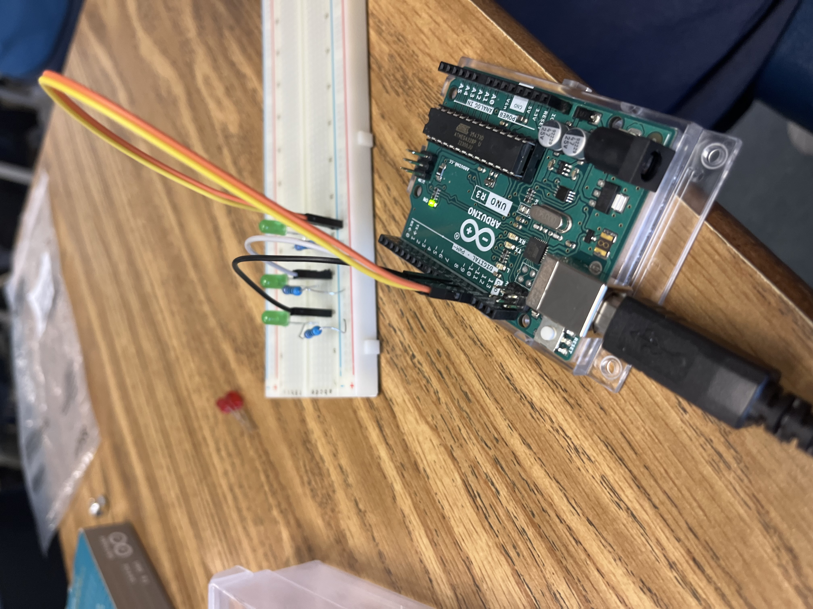
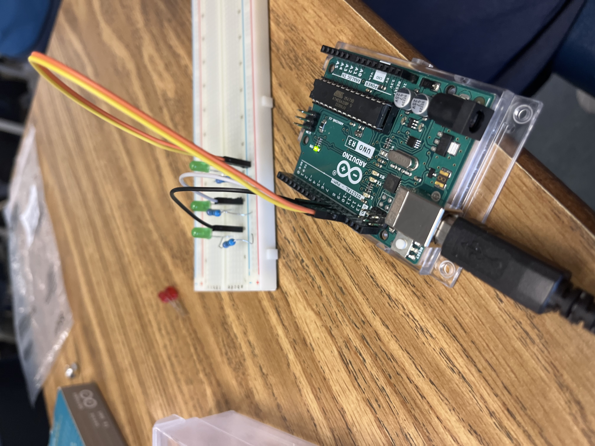

The first day we learned about the enginering process and saftey in the workshop. Later, we had a test on saftey on friday.
Wednsday we learned how to use sketchup and we were given our first project on the Rube Goldberg Machine. Finally on friday we did a second challenge that envolved modeling a appliance or object in 45 minutes then being gudged on them. I did not win
The third week was a short week. Monday was off due to labor day and friday was a half day due to back to school night. The first class period we revisited the Rube Goldberg machine to decide as a group whos desighn to focus on. Mine was chosen as the overall best and simplest in my group.
The second class period, the 9th we had a short day. In the 30 minutes of class we had to make a capital E using presise messurements. I learned that that can be alot harder than it sounds. After we drew the E with all its dimetions we traded desighns and cut out the E using the messurements from the other persons desighn. I got to learn the very basics of how an engeener thinks and builds in a fun way!
The Fourth week of school we focused on building our rube goldberg machine. On monday we started building the machenism out of cardboard. Monday was quicker because of the banking day schedule.
Wenseday was not so smoth. Some of our messurement were to far off to fix and the folding did not work out well. We learned that in the real world the desighn would go back to the cad desighner to re-think the broken part. Thankfuly we got cleaared to continue and nearly finshed our build. Finally on friday we made boats out of a single peice of paper and add weights. Who ever lasted the longest with the most weight won. My groups boat sank almost emidiatly because it had limmited surface area. We also relized that the boat had too much weight and would sing anyway.
The fith week of school we finialized and tested our rubegoldberg machine. On manday we add the finishing toutches to our contraption and reinforeced all of the taped areas with duct tape. On wedensday we were orginalally meant to take state a standardized test, but our school administration had the bright idea to have 1000 students login in at once. Odviously that was a bad idea so we wasted 1 hour of our class time. On top of that my groups contraption was droped by a coustodian which resulted in half the structure breaking. That day I learned that the school admins are not the smartest. Thankfuly we were able to fix the machine in time and compleated the project. On friday we went to another class and watched them test, they had very different ideas. After testing our machine we relized that our rap was very finikey and needed work, so in the future I would improve the ramp.
Week six: On monday we got a lesson on computer enginering by a guest speaker. He explained in depth, what a computer engeeners job was and the componets of a computer. He taught us breifly on the CPU, GPU, RAM, and other key parts. On wedensday we dissasembled old and broken laptops. We got a chance to see all the parts inside of a computer first hand. On friday we finished dissambling the laptop and so we had to reassemble the computers at the last hour of class. I reassembled the computer with no troubble unlike other groups.
Week seven: To start of the week we learned about Bioenginering. We learned how the Enginers take ideas from nature to help improve the lives of others. They need to know how certain materials react with the human body and what affects they have. They need to think about the lifespan, matinece and even power system when making the item. On wedensday we reseacrched an animal to make a prostetic for. We had to take in consideration evrything that a normal engineer would. Finally on the last day we made instructions on how to make a PB&J sandwich. The catch however is that when making the sandwich you had to follow the steps litteraly. If the instructions did not include opening the jar or bread bag then the PB&J was done. We learned how you need to be presice when coding instructions or the whole idea could fall apart.
week eight: The schedule this week was a little weird. We started the week on tuesday with a lesson on areospace enginering. We leared about thrust, drag, and lift. After learning that we made a tinkercad of a bottle rocket.
Week 9: On monday we focused on improving our tinker cad of the bottle. We finalized our BOM and our model. On Wednsday we started building the rocket from a 2 liter bottle, cardboard, and construction paper. We used hot glue to attatch the fins and used tape and construction paper to create the top cone. We finished the rocket and got ready for the testing on Friday. On friday we split the class period with an assenmbley. The second half of class we started the testing. It was outside on the upper field where there was an angled platform and a make-shift air compressor. The angle of the bottle was pre-set, and very quickly we relized that the rockets were not made to go far. Most of the rockets would go backwards and end up spraying the audiance. If i had more time I would have made short wings to propell it forward.
Week 10: This week environmental engineering was covered. We started with a presentation on the fundamentals of environmental engineering. We watched videos on how water treatment plants operate and how water is cleaned throughout the presentation. We also learned the value of maintaining a clean environment and how engineers reduce pollution. Additionally, the effect of industrial activity on the local ecosystem and the surrounding surroundings. Additionally, we learnt about the different jobs and salaries that environmental engineers might expect. After that, we faced an engineering challenge on Thursday. We were challenged with creating a water filter from scratch. We arrange our materials So that the large amounts of dirt were filtered out first by the big rocks, followed by the pebbles all the way Down to the cloth. Unfortunately the cloth got stuck over the hole that the water was intended to drip out of so very little water was actually filtered through the system. Not very effective!
Week 11: We learnt more about electrical engineering this week in class. We kicked off the week on Monday with a presentation on the fundamentals of electrical engineering. We discovered how electrical circuits operate and are constructed through the lecture. Additionally, we practiced creating circuits and restricting current to enable lights to operate. The next step was to create parallel and series circuits. Then, following class, I created a multicolor LED light that could show different colors depending on the light buttons that the user hit. I was able to learn the various electrical components and their functions better thanks to this side project. After that, we faced an engineering challenge on Thursday. Then, on Thursday, we focused more on developing and utilizing different electrical components.
Week 12: We learnt more about electrical engineering this week in class. We began the week's lessons on Tuesday with an experiment on building circuits. Based on a diagram, we were required to create various circuits. Through practice, I became better at solving problems and became more at ease with electrical engineering. Then, we started experimenting with resistors, lightbulbs, and buttons. We were given partners, and Theo was mine. I had a lot of fun doing this lab. We were given a little assignment on Thursday to see how long it would take to count to one million. After that, we updated the website and had the rest of the day to ourselves. This week was a lot of fun and opened my eyes to the interesting world of electrical engineering
Week 13: We learned more about electrical engineering this week in class. We began the week's lessons on Tuesday with an experiment on building circuits. Based on a diagram, we were required to create various circuits. Through practice, I became better at solving problems and became more at ease with electrical engineering. Work with resistors, lightbulbs, and buttons was given to us. I had a lot of fun doing this lab. We had a little test on Thursday to see how long it would take to climb to one meter. After that, we updated the website and had the rest of the day to ourselves. This last week was quite enjoyable and introduced me to the fascinating field of electrical engineering.
Week 1: In class this week, we studied business engineering. We used our time to make products to sell and create shark tank presentations. Additionally, we learnt about margins, profit, and other crucial business ideas. We were able to create a reasonable product presentation and a compelling pitch thanks to our newly acquired expertise. The item we created, "Sloth," is a "anti-energy" beverage that promotes sleep. We outlined a reasonable production cost and the purpose of our investment in our pitch. We also used the week to check out the intriguing goods that other teams came up with and learn about the pitfalls of idea pitching.
Week 2: We worked on management engineering this week. We examined the idea-generation and pitching processes used by businesses. We also learned about business management. This week's project required us to put on a shark tank presentation. We had to brainstorm products to sell in groups and present them to the class, including the costs and potential rewards. Theo and Taylor, who were in my group, came up with the concept of "sloth," an anti-energy drink. It's a beverage that makes you fall asleep rather than energises you. Overall, our pitch went quite well, and we had a strong proposal with great data to support it.
Week 3: We learned about chemical engineering this past week. On Wednesday, we discussed a few chemical engineering subfields. Fuel, nuclear, nanotechnology, and molecular science are a few of them. Chemical engineers can achieve some very amazing things. The lake issue, which involved too much sunlight, chlorine, and bromide, was the next challenge. Reverse osmosis was the solution my group proposed, but the real fix involved adding tiny black balls to the lake to block out the sun. We produced oobleck, which is a mixture of cornstarch and water, on Friday
WThroughout the past six weeks of school, Tayor, Theo and I have worked vigorously on building a mousetrap car capable of traveling at least a one classroom distance. In the early stages of production we made a CAD and project proposal, that was the smoothest part. After that we started cutting out our materials needed for the project. We had to be very careful to ensure that the dimensions were accurate to the CAD. We had future troubles with this later down the line. After assembling the car we realized that there were a few flaws in our design. First we realized that our front wheels were not very efficient. They would always roll off the axel or not roll at all. We fixed that issue by gluing both wheels to a skewer and having the skewer rotate on its own instead of having two individual turning wheels. After that we realized that our back wheel would hit the edges of our car body while in motion. We tried many solutions to fix this problem but in the end none of them truly worked. Overall If we had more time I believe that we should have 4 wheels instead of 2 small wheels and 1 big wheel. After realizing that the one wheel was more of a con than a pro it was too late to change it. In the end we achieved our goal of traveling over 1 classroom length.
Week 9: The week started off slow and on tuesday we just worked on our websites. However on thursday we had a challenge. The challenge was to get a boat down a gutter as far as possible. The boat had to be smaller than 7 cm wide to fit and at max 15cm long. At first we were pretty stumped on when to do but then we slowly made progress. Our desing was a peice of cardboard paper with a sail and ballon on it. When testing it at the gutter, the boat did really well. It was able to get 7 feet which was more than most. Overall it did alot better than I expected.
Week 10: This week we started off on wedensday because of our spring break. That bad we were presented with a new challenge. We had to protect an egg from a 3 story drop. We started by just doing a sketch with the materials given. My idea was to use ballons an cotten balls to soften the fall. On friday we converted our sketches into tinkerCAD. The tinkercad had to be accurate and had to be exact with presise dimentions. All in all the week was very easy.
 
